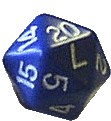
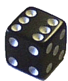

KtOG is a simple dice-based combat game for 2 or more players created by Nate and his friends in the 1980s. You can read some more about the history of KtOG on the KtoG History page. In the game, each player attempts to ‘Kill the Other Guy(s)’ by ‘rolling to hit’ (using a 20 sided die), ‘doing damage’ (using a 6 sided die), and employing the various skills and spells at opportune times to win the game by reducing all other players to 0 ‘hit points’. A handy printable game sheet is available.
CORE RULES
- A 6 sided die (d6) is rolled to determine initiative, with highest number going first and then around to the left of the winner. Ties are re-rolled. [a 10 sided die (d10) may be used as well! Which means you can use a d20 and just count the single digit] Variant – Initiative can be rolled every time or a set order can be determined from the onset. It is found that re-rolling for initiative keeps the game from getting stale, but it is hard to do when you are hiking and trying to get somewhere.
- A 20 sided die (d20) is rolled to “hit” the other guy(s). You must announce who you are going to attempt to strike before rolling the die. While many gamers might think to roll the attack die (d20) and the damage die (d6) at the same time, this isn’t allowed in KtOG.
- A 14 or higher is necessary to hit. There are many variants here. Die hard role players may like to require players to assume the persona of a fighter or magic user. A fighter then would have a better “to hit” roll and higher ‘hit points’ (see below), but would not be able to cast spells. There is a lot of room for improvisation in each session.
- If a hit is scored, roll d6 for damage. [ie: 1-6 hit point of damage]
- Each player starts with a set number of ‘Hit Points’ (this is variable from game to game, usually 15 to 25). When a player is reduced to 0 ‘Hit Points’, the player is unconscious. An optional rule allowed a percentile roll of 50% or under to remain standing at zero hit points.
SPELLS
- Each player [unless the role playing variant described in #3 is being used, in which case only a magic user] starts with a complement of 6 spells. To use a spell, it must be announced at the appropriate time. The appropriate timing is discussed in the description for each spell. Once a spell is cast, it is lost or “spent”. Only one spell can be cast in a round (no spell can be cast in conjunction with another). The spells are:
- Haste Spells (two) – when a player chooses to use a haste spell, he does so at the beginning of his turn. Haste allows a player to roll twice “to hit” that round (consecutively). Haste can also be used to lessen the amount of time spent disarmed (see ‘Disarmed Combat’ below)
- Cure Spell (one) – heals 2-10 points of damage. (Roll d20 and discount the tens digit so that 11-20 becomes 1-10) or use a d10. Re-roll a 1 cause 1s suck! This spell is cast in place of an attack and is announced at the beginning of one’s turn.
- Bless Spell (one) – increases your chance to hit by reducing the number required to hit by 2. Bless reduces the number required to disarm by 1 (because it is harder to disarm someone than hit them).[1] This spell is announced at the beginning of the turn. [for example: At the beginning of your turn say: “I use a bless” and you will need only a 12 to hit instead of a 14]
- Mighty Blow (one) – Once you have successfully hit someone, [ie: rolled a 14 or better after announcing who you are “going for”], but BEFORE you roll damage, you may opt to use a ‘mighty blow’ which then multiplies the damage rolled (on d6) by 2. This can be very damaging and so as a courtesy, players MUST wait a few seconds after successfully hitting someone before announcing this spell. This gives the hit person a chance to ‘Dodge’ (see below) if he/she so wishes. It also creates a dramatic pause wherein players glare at each other for a bit trying to decide whether or not a ‘Mighty Blow’ is forthcoming and whether or not to waste the precious ‘Dodge’ spell…
- Dodge Blow (one) – When you have been successfully hit, you may opt to ‘Dodge’ in certain instances. Any damage that would have been incurred is nullified by the use of the ‘Dodge’. This spell must be announced immediately after you have been hit, but BEFORE damage is rolled. Also, the ‘Dodge’ spell must be announced BEFORE a ‘Mighty Blow’ (see above) is announced. Most often, folks will save their ‘Dodge’ spell for a disaster. As you will find in the following rules, if a player hits you with a ‘Natural Twenty’ and decides to then use a ‘Mighty Blow’ spell, the damage dished out can be devastating. Saving the ‘Dodge’ for such an occasion is usually prudent.
MORE RULES
- Critical Hits / Critical Misses (‘Natural Twentys’) – When rolling to hit, if a 20 is rolled it is called a critical hit and does 2d6 of damage (not one d6 times 2!). Its good sense to ‘Dodge’ a critical hit. When used in conjunction with a ‘Mighty Blow’, 2d6 dice are rolled for damage and the result is multiplied by two! When rolling to hit, if a 1 is rolled it is called a critical miss. This means you REALLY missed! If you critically miss, you must make another roll immediately to determine if you hit yourself (a 17 or higher indicates you did, and that you must roll d6 for damage to yourself caused by this most unfortunately bad swing). If you are lucky enough to have not actually hit yourself, you must make another roll to see if you are unlucky enough to have lost a good grasp of your weapon in this mishap. (a 17 or higher indicates you do). If you do, you are considered DISARMED (see below)
- Disarmed Combat: When you are ‘Disarmed’ in combat, you have had your weapon knocked from your hand and it is assumed you are easier to hit because you are scrambling to regain it. Players are always disarmed for at least two full rounds (everyone goes twice) before they can regain their weapon. During this time, all players who choose to attack the disarmed player do so at a +2. This means they only need a 12 to hit the disarmed player. (This may become as low as a 10 if a ‘Bless’ is in effect).
- Attempting to Disarm: A player may ‘Attempt to Disarm’ another player on purpose (try to knock the player’s weapon out of his hand). This is accomplished only when a player states the attempt and then rolls a 17 or higher (or a 16 when using a Bless). If accomplished, the attacked player is considered ‘Disarmed’ as described above.
- Actions while disarmed:
- If a player is disarmed in combat, he may opt to use a Cure spell in his next turn, and not immediately try to regain his weapon. In such a case,
initiative is rolled and the disarmed player may ‘Cure’ in his turn, but will still be considered disarmed for the 2 rounds following.
- Normally, it is assumed a disarmed player is scrambling for his/her weapon immediately after losing it, however, there are certain instances when a player may decide not to immediately attempt to regain his/her weapon. A disarmed player may fight bare handed with a -1 penalty ‘to hit’ and -2 to damage scored.[2] It will still take 2 full rounds to regain the weapon once the attempt begins, and other players still reap the benefit of the +2 to hit the disarmed player. This is because it is assumed that a disarmed player cannot ‘parry’ without a weapon. This rule arose because there are naturally some times, near the end of a vicious game when almost everyone has been reduced to a very precious few ‘hit points’ and a disarmed player may want to try to take out an opponent with a lucky blow of the fist and not leave himself completely vulnerable to all attacks.
- A player may opt to use a ‘Haste’ spell (if available) in his turn to pick up his weapon. Since a haste allows a player to go twice, this may completely counteract any detriment due to being disarmed. (If initiative variant from rule #1 is used, a player may suffer some disarm penalties before he is able to cast ‘Haste’)
FAQ and RULES CLARIFICATIONS
- Q – Can you choose to heal someone else? This often comes up as players decide to double team someone or as factions emerge in games with larger numbers of players. A – Sure! Since the heal is actually a spell and not a skill I don’t think there needs to be any “roll to hit” in order to lay hands on another player, but as a variant I suppose that would work.
- Q – What happens if you roll a critical miss when you are rolling to hit yourself? What happens if you critically miss on a roll to drop your weapon? A – My take on this is that “1s suck” and rolling more of them should only suck more, never less. Since the original rules state that you need a 17 to hit yourself, a 1 doesn’t do it. If rolled when checking if you drop your weapon, I think it would be a nice variant if you lose the weapon for a longer period of time – you *really* dropped your weapon, in fact it went flying across the room! It now takes three full turns to get it back into your hand.

1. & 2. changed by Nate and Rob, Dec. 2010